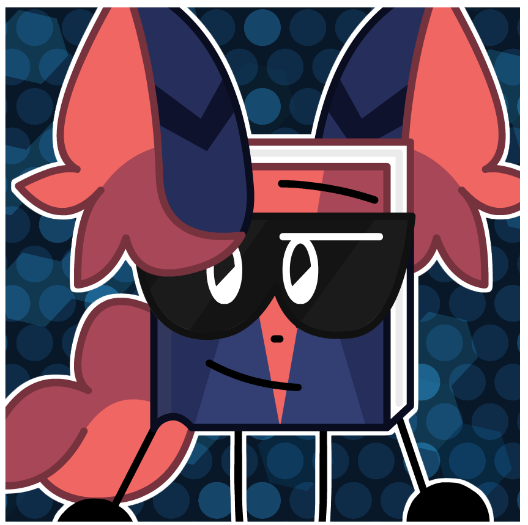

<!DOCTYPE html>
<html>
    <head>
        <meta charset="UTF-8">
        <!--CE stands for Cool's Encyclopedia-->
        <title>
            Raven - CE
        </title>
        
        <link rel="icon" type="image/png" href="./Data/ravenpixel.png">
    </head>

    <body style="background-color: gainsboro;">
        <!--Offset from left of page (this sucked to program btw)-->
        <aside style=
        "width: 95%; 
        padding-left: 15px; 
        margin-left: 15px; 
        float: right;">

        <!--Top of page: Title-->
        <!--
            Apply CSS to make the titlebox:
            As wide as can be without touching the image
            Border is red and thick and has rounded corners
            Inside is red asf
            Text color is indigo
            Whole thing is meant to use Raven's color palette :>
        -->
        <h1 style=
        "border: 4px solid darkred;
        background-color: red;
        color: indigo;
        border-radius: 40px;
        text-align: center;">
            Raven
        </h1>

        <!--Raven image-->
        <!--
            Apply CSS to make the image:
            Off to the right of the page
        -->
        <aside style=
        "width: 50%; 
        padding-left: 15px; 
        margin-left: 15px; 
        float: right;">
            
        <!--Under image-->
            <br>
            <small>
                Raven as shown in his Reveal Art. (Drawn by Neon)
            </small>
            <!--
                Apply CSS to make the infobox:
                Black border with rounded edges
                Background gray
                Width the size of the image
                Align text in center
            -->
            <p style=
            "background-color: beige;
            border: 2px solid black;
            border-radius: 15px;
            width: 490px;
            text-align: center;
            color: black;">
                <!--Name-->
                    Raven<br>
                <!--Pronouns-->
                    He/Him<br>
                <!--Index-->
                #02<br><a href="./keymaster">(-- Back</a> <a href="./pastel">Next --)</a><br>
                <!--Defining Trait-->
                    Defining Trait: Programming<br>
                <!--Notes-->
                <b>
                    Notes:<br>
                </b>
                <small>
                    Raven is the first book OC Cool made.<br>
                    His visor gives him special powers.
                </small>
            </p>
        </aside>

        <!--Top of page: Quote-->
        <h5 style=
        "width: 200px;
        border-radius: 5%;
        border-top: 2px solid;
        border-bottom: 2px solid;
        color: black;">
            "Well. I'm here now.<br>
            Meet Raven!<br>
            He/Him<br>
            <small>
                (Neon helped me with this one!)
            </small>
            Raven has coding capabilities, and is able to use his skills to alter his environment! He isn't quite an expert yet, so he can't quite warp
            reality or anything like that, but he is skillful enough to alter little things around him. His visor helps him focus enough to do his thing,
            and it has some HUDs that help him know what certain things around him correspond to in code." <br>
            <small><b style="color:black;">- Cool, Raven Reveal</b></small>
        </h5>

        <!--Top of page: Home Hyperlink-->
        <h3>
            <a href="./">Back to home</a>
        </h3>

        <!--Top of page: Infoboxes (Page Warnings)-->

        <!--Missing images-->
        <!--
            Apply CSS to make the Infobox:
            Red asf
            Border is black and has rounded corners
            Width is as wide as can be without touching the image
            Tall-ish
        -->
        <p style=
        "width: fit-content;
        border: 2px solid black;
        border-radius: 15px;
        text-align: center;
        font-size: large;
        background-color: crimson;
        color: black;">

            <br><b>This page is missing images.</b><br><br>

            <small><small>Missing images: Moadeas' art of Raven, and Neon's pixel art of Raven.<br><br></small></small>
        </p>
        <!--Missing content-->
        <!--
            Apply CSS to make the Infobox:
            Red asf
            Border is black and has rounded corners
            Width is as wide as can be without touching the image
            Tall-ish
        -->

        <p style=
        "width: fit-content;
        border: 2px solid black;
        border-radius: 15px;
        text-align: center;
        font-size: large;
        background-color: crimson;
        color: black;">

            <br><b>This page is missing content.</b><br><br>

            <small><small>Missing content: Table of Contents, Lore, Camp Lore, Gallery, etc.<br><br></small></small>
        </p>

        <!--Middle of page: Official Description-->

            <p style="font-size: x-large;"><b>Official Description:</b></p>
            <p style="width: 45%; border: 1px solid; border-radius: 100%;"></p>
            Raven is a male book object who is absolutely in <em>love</em> with programming. He spends all his free time doing programming, his <em>job</em>
            is programming...<br>
            He also lives in an apartment with <a href="./pastel">Pastel</a>. His job as a programmer allows him to have enough money to pay his half
            of the rent as well as go shopping each week for him and <a href="./pastel">Pastel</a>.<br>
            Raven's <a href="./abilities">Ability</a> is that he can alter specific parts of his environment using his visor. Not reality breaking
            stuff, (at least not <em>yet</em>), but he can do basic things like alter the gravity in a small radius around himself. Think about this
            <a href="./abilities">Ability</a> like he can tweak some lines of code of his environment.<br><br>

        <!--KEEP THIS AT VERY BOTTOM!!-->
        <br>
        <br>
        <small>
            <small style="color: gray;">
                <small>
                    Update convention: major.minor.patch(stage of dev)<br>
                </small>
                Site Version: <div id="text-container">Loading...</div>
            </small>
        </small>
        <script src="script.js"></script>
        </aside>
    </body>
</html>